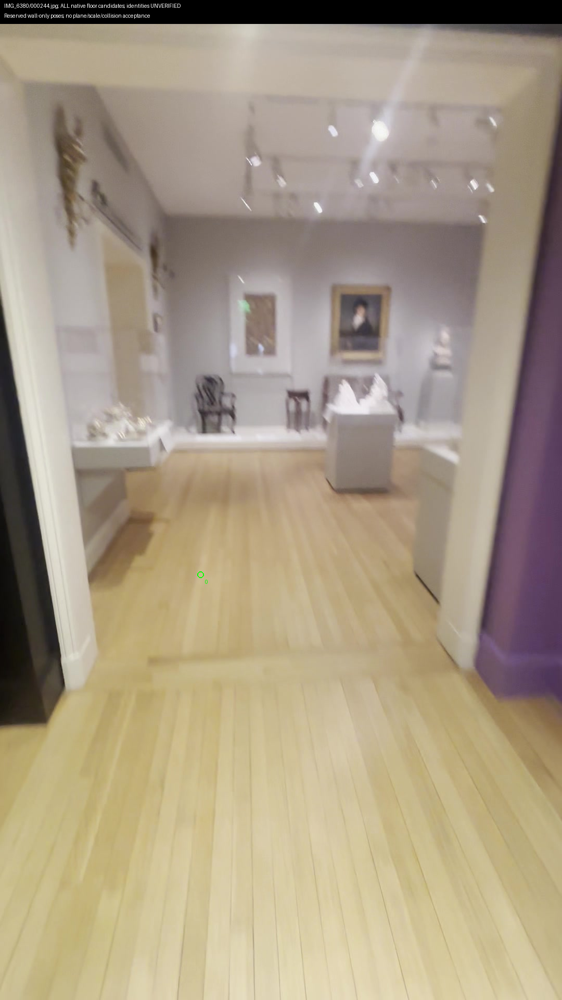
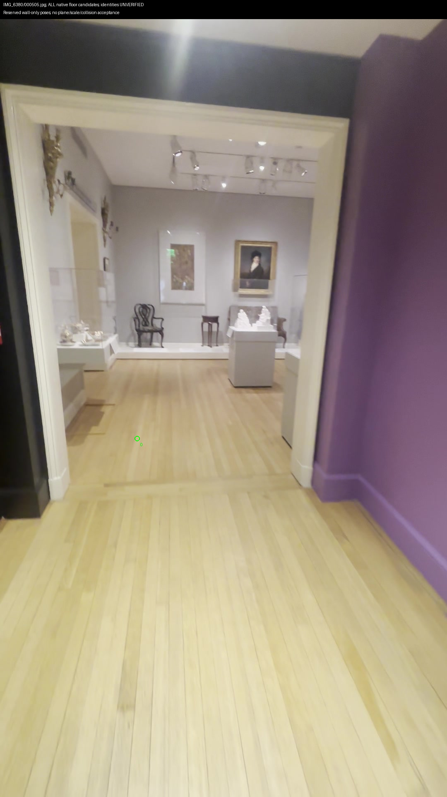
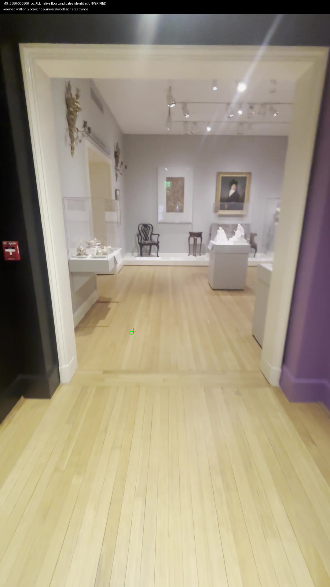
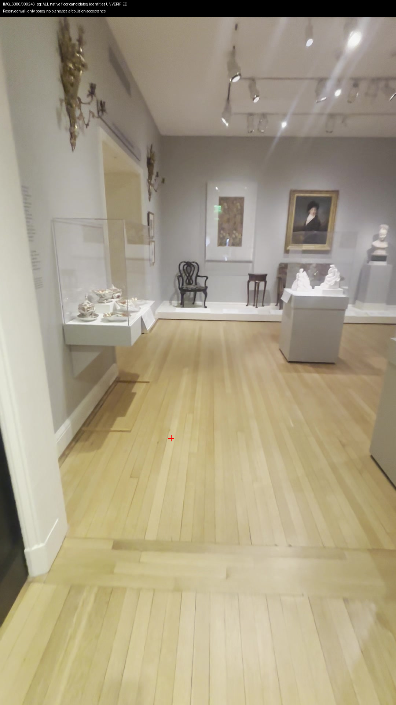
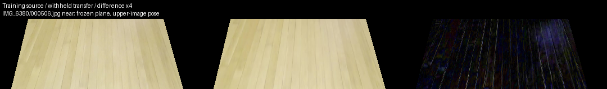
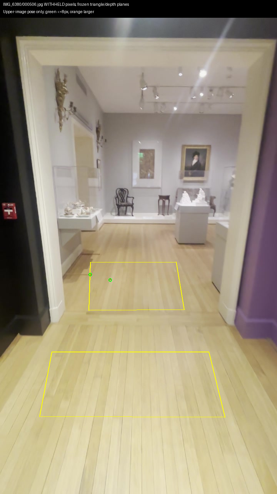
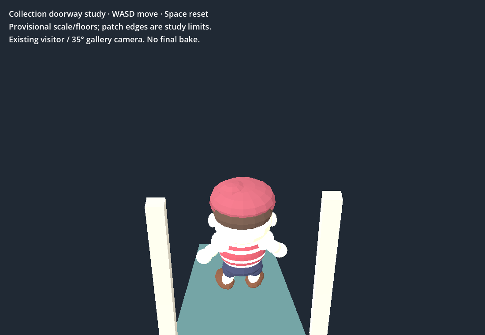
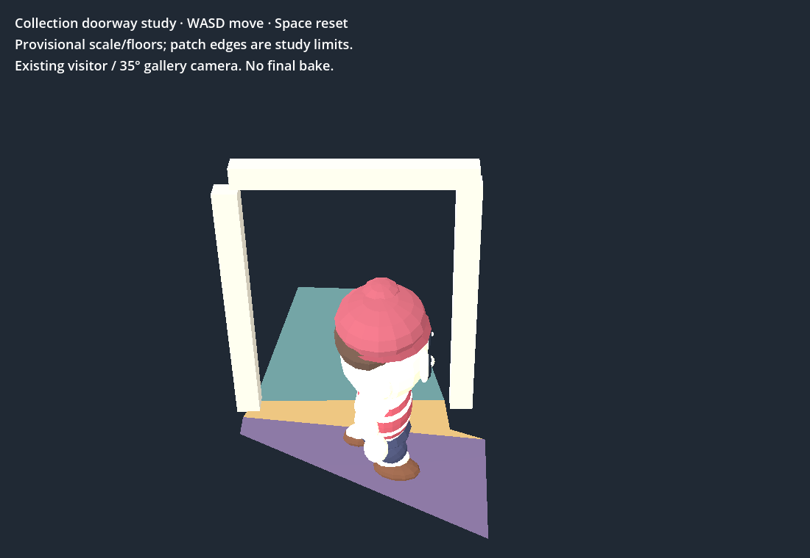

2026-09-30 16:00 UTC · prototype evidence · $0 spent
One additional native floor candidate; one reserved observation at 6.33px. Combined floor-plane sensitivity remains 15.98°. A shifted control scores better in506; no floor, scale or collision acceptance.
All 24 native and Chrome bounded-walk checks plus real WASD crossing/return pass. Shell retains five previously observed failures. Viewer unchanged; connected museum incomplete.
Dated checkpoint and next action · Run the historical bounded walk (WASD / Space) · Native matching evidence · Plane transfer and controls · Hashes and provenance







